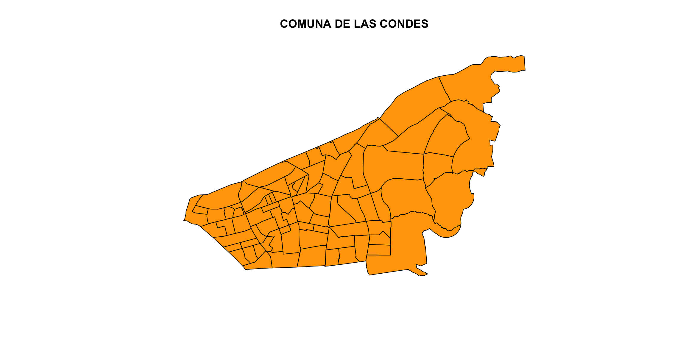
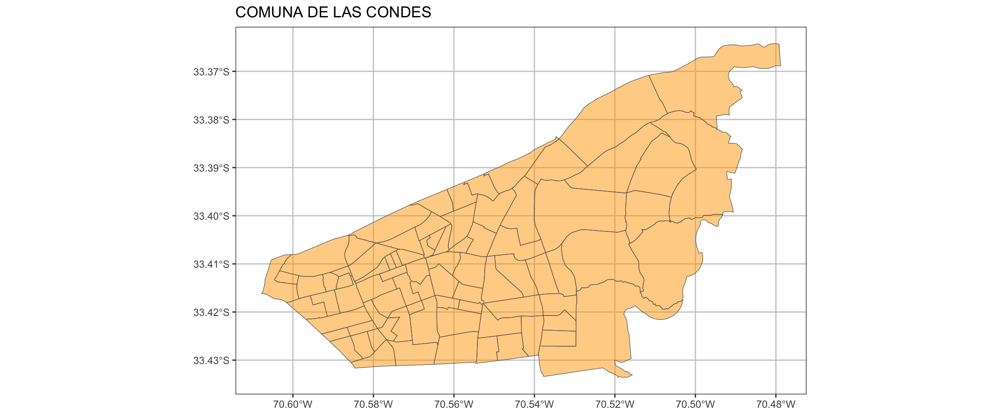
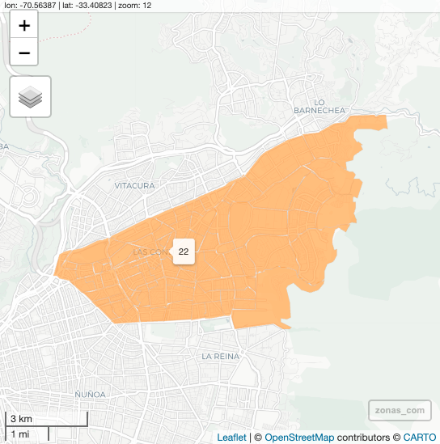

# install.packages("sf")
library(sf)
crs_ll <- "+proj=longlat +datum=WGS84 +no_defs"
crs_utm <- "+proj=utm +zone=19 +south +datum=WGS84 +units=m +no_defs +ellps=WGS84 +towgs84=0,0,0"
censo <- readRDS("data/censo/zonas_urb_consolidadas.rds")7 Objetos Espaciales en R
7.1 Introducción
Los elementos tienen una geometría que describe su ubicación en la Tierra y atributos que describen otras propiedades. La geometría de un árbol, por ejemplo, puede ser la delineación de su copa, de su tallo o el punto que indica su centro. Otras propiedades pueden ser su altura, color, diámetro a la altura del pecho en una fecha determinada, etc.
7.2 Lectura de Insumos Espaciales
7.3 Transformar a objeto sf (simple features)
# transformar a objeto sf (simple features)
censo_sf <- st_as_sf(censo)
# head(censo_sf)
names(censo_sf) [1] "REGION" "NOM_REGION" "PROVINCIA" "NOM_PROVIN" "COMUNA"
[6] "NOM_COMUNA" "URBANO" "DISTRITO" "LOC_ZON" "GEOCODIGO"
[11] "AREA" "COD_INE_15" "COD_INE_16" "VALIDO" "KM2"
[16] "ESC_JH" "PERS" "M2_O" "M2_C" "DENS_HAB"
[21] "DENS_OF" "DENS_COM" "geometry" 7.4 Filtros espaciales por data
library(dplyr)
mi_communa <- "LAS CONDES"
zonas_com <- censo_sf %>%
filter(NOM_COMUNA == mi_communa)
zonas_com %>% head()Simple feature collection with 6 features and 22 fields
Geometry type: MULTIPOLYGON
Dimension: XY
Bounding box: xmin: -70.56629 ymin: -33.41713 xmax: -70.47884 ymax: -33.36421
Geodetic CRS: +proj=longlat +datum=WGS84 +ellps=WGS84 +towgs84=0,0,0
REGION NOM_REGION PROVINCIA NOM_PROVIN COMUNA
1 13 REGIÓN METROPOLITANA DE SANTIAGO 131 SANTIAGO 13114
2 13 REGIÓN METROPOLITANA DE SANTIAGO 131 SANTIAGO 13114
3 13 REGIÓN METROPOLITANA DE SANTIAGO 131 SANTIAGO 13114
4 13 REGIÓN METROPOLITANA DE SANTIAGO 131 SANTIAGO 13114
5 13 REGIÓN METROPOLITANA DE SANTIAGO 131 SANTIAGO 13114
6 13 REGIÓN METROPOLITANA DE SANTIAGO 131 SANTIAGO 13114
NOM_COMUNA URBANO DISTRITO LOC_ZON GEOCODIGO AREA COD_INE_15
1 LAS CONDES LAS CONDES 5 1 13114051001 346506.4 13114051001
2 LAS CONDES LAS CONDES 4 1 13114041001 2797019.6 13114041001
3 LAS CONDES LAS CONDES 4 3 13114041003 2530681.2 13114041003
4 LAS CONDES LAS CONDES 16 2 13114161002 1497554.8 13114161002
5 LAS CONDES LAS CONDES 15 3 13114151003 855603.3 13114151003
6 LAS CONDES LAS CONDES 2 2 13114021002 594053.2 13114021002
COD_INE_16 VALIDO KM2 ESC_JH PERS M2_O M2_C DENS_HAB
1 13114051001 TRUE 0.3465064 16.08958 4173 10910.000 18578.00 12043.068
2 13114041001 TRUE 2.7970196 16.34331 4788 5820.806 48723.11 1711.822
3 13114041003 TRUE 2.5306812 16.19528 6315 125513.194 84384.89 2495.376
4 13114161002 TRUE 1.4975548 16.75400 2250 738.000 72.00 1502.449
5 13114151003 TRUE 0.8556033 16.84848 4675 1130.005 51982.94 5463.981
6 13114021002 TRUE 0.5940532 15.85904 3987 24382.000 298226.00 6711.520
DENS_OF DENS_COM geometry
1 31485.7121 53615.17494 MULTIPOLYGON (((-70.56008 -...
2 2081.0745 17419.65356 MULTIPOLYGON (((-70.47951 -...
3 49596.6041 33344.73221 MULTIPOLYGON (((-70.5267 -3...
4 492.8033 48.07838 MULTIPOLYGON (((-70.50789 -...
5 1320.7117 60755.89536 MULTIPOLYGON (((-70.51477 -...
6 41043.4616 502019.00493 MULTIPOLYGON (((-70.53606 -...7.5 Visualización Cartográficas
7.5.1 Visualización estática Simple
## Visualizar
# Consideración el plot se realiza sobre la columna geometry
nombre_plot <- paste0("COMUNA DE ", mi_communa)
plot(zonas_com$geometry, main = nombre_plot,col ="orange")
7.5.2 Visualización estática con ggplot2
library(ggplot2)
# Visualización ggplot y sf
ggplot() +
geom_sf(data = zonas_com, fill = "orange", alpha=0.5)+
ggtitle(nombre_plot) +
theme_bw() +
theme(legend.position="none")+
theme(panel.grid.major = element_line(colour = "gray80"),
panel.grid.minor = element_line(colour = "gray80"))
7.5.3 Visualización Dinámica con mapview
# install.packages("mapview")
library(mapview)
m <- mapview(zonas_com, alpha = 0.5,
col.regions = "orange", color="gray80",
legend =FALSE, cex = 3)
m 